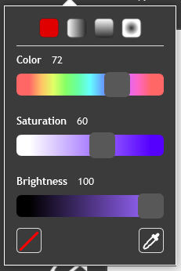

These are all located above the canvas.

The paint editor has a color drop-down that has three sliders that can be used to select colors: color, saturation, and brightness. It is found in the middle-left side of the editor.
Above the three sliders, there are four options. These allow you to blend an area between the two selected colors. If you click one of the options other than the solid color option, two selected colors are shown. Click on each one to edit it separately. Choose the white box with a red line in the middle for nothing, which will create a fade effect. If you fill in an area using one of these options, it is called a gradient. Selecting "Swap" between the two colors switches their order.
Changing the color slider changes the hue of the color (for example, from red to blue). This tool is used often, as it can make a large difference between colors.
The saturation of a color is how strong it is for a color with its brightness: 100 saturation is the color selected, 50 saturation is a lighter color, and 0 saturation is just a shade of white or gray.
This option changes how light or dark the color is. The left is completely black, while the right is the selected color.
In the bottom left of the palette, there is a white box with a diagonal red line in it. When clicked, the color will become invisible. Uses of this include giving something no outline, giving something no fill and making transparent colors.
The No Color option can be used to make transparent colors. When used with the horizontal or vertical gradient, the color in the middle of the shape will be transparent. The edges of the shape can be rubbed out with the eraser tool, leaving only the center left. The transparent object can then be reshaped and resized using the reshape tool.
At the bottom right, there is an icon that allows you to pick up a color from the costume, sometimes called the "eyedropper". It will magnify the area the mouse-pointer is near. On the outside is the color you are hovering over. Click to select it.
In the middle of the paint editor is the pen size bar. It is marked by a paintbrush icon. There is an input to select the pen size. Type in the size or use the arrows on the side to change it. The higher the number is, the thicker the Brush, Line, and outlined Ellipse and Rectangle tools will draw.
To name a costume, just click on the text bar at the top-left of the paint editor and enter the new name. The name of the costume is important for organization and also in programming the project at times. It is best not to name costumes as just numbers without any other characters because it causes confusion with the costume blocks; this is due to each costume having both a name and numerical order value in the costumes pane, so switching to costume "2" could mess up if the third costume was named "2".
To the right of the outlines there are two options: copy and paste. The copy option copies the region that is selected, while the paste puts it somewhere else. This is especially useful when one needs to duplicate an item. You can use Ctrl+C to copy as well and Ctrl+V to paste. When a selection is copied and pasted, the position of the copy is offset, compared to the original selection. To paste content in place (with the same position as the original): (1) copy a selection, (2) switch to a different costume, (3) switch back to the original costume, (4) paste the copy, before making any other modifications.
To the right of the costume name are two buttons called undo and redo. These buttons allow you to make it as if the last action never happened and repeat the undone action respectively. The redo button cannot be used unless the undo button has been used. If no actions have been taken, neither button can be used. If you change from the costume editor to something else, your actions will be permanent and can only be undo manually. The keyboard shortcut for undo is Ctrl+Z.
This editor's tools are similar to Scratch’s vector editor, but instead use a grid of pixels on a region instead of spline creation. Due to not using splines, these images are pixelated and do not have as many tools available.
The paint brush is a tool simply for drawing wherever the mouse-pointer is clicked. The color and size modify the display of the paint brush's pen marks. To change the brush's size, simply go to the input box next to the color menu and change it to your desired size.
The line tool is used for drawing straight lines. holding ⇧ Shift allows you to make lines at perfect benchmark angles (such as 90 degrees, -180 degrees, or -45 degrees).
The oval tool, commonly known as the "circle" or "ellipse" tool, is used for creating ovals of any shape and size. Just like the rectangle tool, when the oval tool is selected there will be two buttons in the bottom-left of the paint editor. The first is used to create an oval with a hollow center, and the adjacent one is used to create a solid, filled-in oval. The oval tool can also create perfect circles by holding down the ⇧ Shift key while drawing.
The rectangle tool, commonly known as the "square tool", is used for drawing rectangles (4-sided, geometric shape with all right angles). These rectangles can either be solid or transparent in the center. When the tool is selected, to the right of the color selection will be two buttons, one consisting of an outlined rectangle, and one consisting of a filled one. By default, the filled one is selected. This means that any drawn rectangle will be one solid mass. If the button consisting of the outline rectangle is selected, the shape drawn will have an open, see-through center.
The paint bucket is used to fill in any closed region of a consistent color with one solid color. This can be accomplished by clicking in the desired area on the canvas. The color spreads everywhere that has the same color on it.
Caution: If your shapes have small holes in them, the color will spread out of the shape. Check for any holes before using this tool.
The eraser tool is used to remove (or erase) a clicked area on the canvas. The colors that are erased are replaced with no color, meaning that area is see-through. Unlike the vector eraser, it does not leave an outline.
The select tool (formerly the screen region grabber) is used to grab an area on the canvas and relocate, stretch and compress, or modify it in some way. This can be done by clicking and dragging around the desired area. Then, a blue box will appear around that area. If you grab the center of the dotted box with the mouse, you can move the section around. Also, you can stretch and compress it with the measurement boxes that appear around the outside. Rotate the section with the blue arrows located below the selected region.
The scroll bar can be used to quickly pan around an image in the paint editor. It typically will pan vertically, but if the ⇧ Shift key is held down, the scroll bar will pan about the image horizontally.
The document can be renamed at the top by typing in the text box.
To zoom in or out, click on the magnifying glass tools in the bottom-right. The one with the "+" zooms in and the one with "–" zooms out. The button between them sets the zoom to 100%. Zooming in when drawing can help to create smoother lines than when zoomed out.
Holding the Ctrl key while scrolling is a shortcut for zooming.
If a mistake is made, click the undo or redo button at the top.
Ctrl+Z or ⌘ Cmd+Z is a shortcut for undoing actions.
To resize a sprite from the center, hold Alt on the keyboard and resize by dragging from a corner.
Objects and pixels can be placed or drawn outside of the canvas in vector mode, although they may be cut off, as in backdrops, on the stage.
To center your object perfectly, drag it to the center where the circle and the + are at, and it will align perfectly.
Holding the shift key will create perfect circles and squares.
To report bugs, click here.